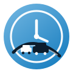

Start with the ride you want. In Gaborone you can narrow it to CBD, Broadhurst, Mogoditshane, Game City, and the rest.

Nako taxi rank network Association deskNot ride-hailing
Know what’s coming.
Botswana’s ranks, on your phone. Spot a corridor near you, then catch a taxi, kombi, or coach the way people already do.
Phase one
Open the app. Pick a ride. Stand at the right rank.
This site tells the story. The search itself lives in the installed app, so it still works when the signal drops.
Turn location on, pin the street, or type a place people actually say out loud: Riverwalk, Block 8, Station.
Nako points to a nearby corridor. Keep it, or ignore it and choose another. You’re still the one boarding.
Vehicles on the map are simulated for now. Trackers for drivers come later. The search already looks and feels like the live map will.
The network
Built for ranks. Growing with the association.
Nine pieces of the full Nako network. Hover a card to see where each one sits.
Auth + roles
Passenger, driver, fleet owner, and association each get their own door.
Drivers + vehicles
Register drivers and keep vehicle details where the rank can see them.
Taxi ranks
Digitise the ranks so people know what is waiting before they walk over.
Online GPS
Live vehicle location and status once the trackers are fitted.
Rank check-in
Drivers check in and out at the rank with QR or location.
Passenger discovery
Find nearby ranks and available taxis without calling around.
QR verification
Scan a vehicle and confirm it belongs on the platform.
Owner dashboard
Fleet owners watch performance without standing at the rank all day.
Association desk
Monitor ranks, drivers, routes, and compliance from one place.
Get Nako
Put the finder on your home screen.
One install. Then the route list, the map, and the simulated vehicles open from the icon.
-
1
Android or Chrome
Tap Download the app, confirm Install, then open Nako from the icon.
-
2
iPhone
Tap Share, then Add to Home Screen, then open the Nako icon.
-
3
Use it offline
Saved routes stay on the phone. When you’re back online, Nako syncs quietly.